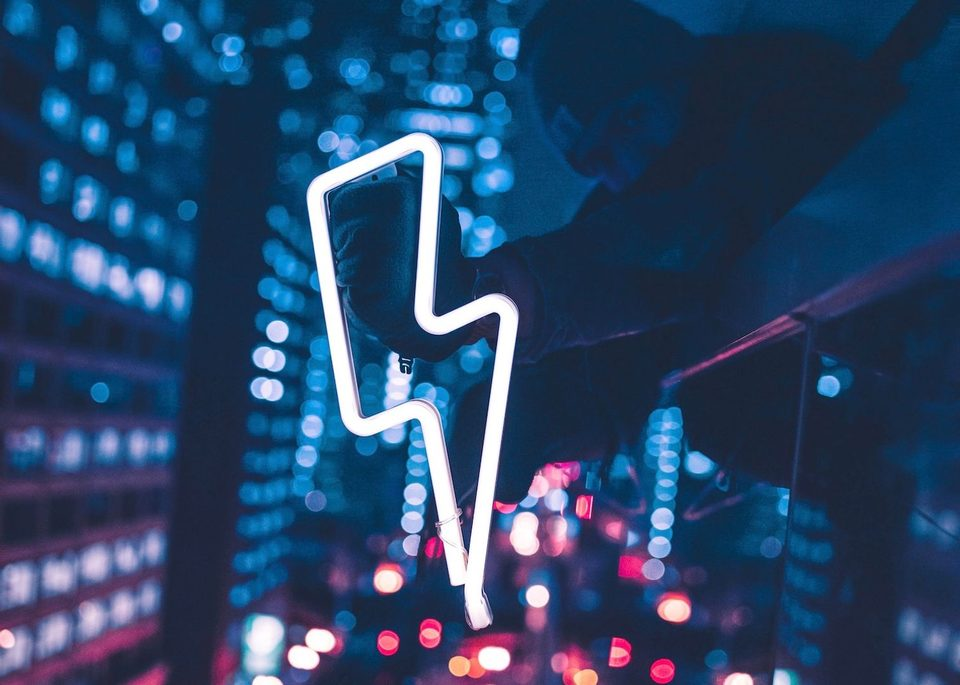
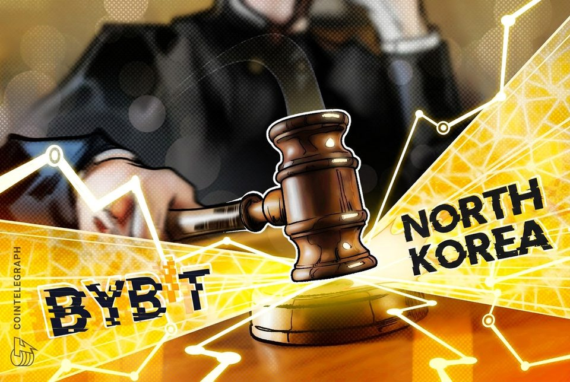

U.S. Senate opens first stage of crypto Clarity Act voting to give bill a chance next month
U.S. Senate opens first stage of crypto Clarity Act voting to give bill a chance next month

Domestic stablecoins could boost demand for dollar-backed tokens: IMF
IMF first deputy managing director Dan Katz says users may favor digital dollars for their liquidity, network effects and cross-border acceptance.
Bitcoin's AI security sprint found 6,700 issues in 55 hours, but no one knows how many are real
The 55-hour campaign shows AI can rapidly fill a security-review pipeline, while public data still cannot show how many findings were valid or fixed. The post Bitcoin’s AI...

Trump Media Abandons Crypto Treasury, Prediction Market Ventures
Truth Social's parent company is unwinding two major Crypto.com deals as new leadership shifts its focus to media, data licensing, and a planned merger with fusion energy company...

Another Bitcoin infrastructure exploit hits, this time draining Lightning payment servers
Another Bitcoin infrastructure exploit hits, this time draining Lightning payment servers

US court backs Bybit's bid to trace funds from $1.5B North Korea hack
Expedited discovery allows the exchange to seek account identities, balances and transaction histories from platforms with US operations.

Inside the uncollateralized deal that locked up 6 million SUI until 2028 while SUI Group trades at a 25% NAV discount
The uncollateralized receivable runs to 2028, while an Aug. 6 sensitivity puts market value 24.5% below company-calculated NAV. The post Inside the uncollateralized deal that...

Treasury Sanctions Crypto Exchanges It Says Laundered Millions for Iran
The U.S. Treasury sanctioned two crypto exchanges it says laundered millions of dollars for Iran's Revolutionary Guard, naming a Georgia- and UAE-based operator and an Iran-based...

New XRP Ledger amendments target $530 million in tokenized Wall Street assets
New XRP Ledger amendments target $530 million in tokenized Wall Street assets

Donald Trump's media company to terminate Crypto.com deal
The president’s company will unwind an agreement with Crypto.com to create a multibillion-dollar CRO treasury and reportedly not integrate prediction markets onto Truth Social.
Bitcoin has 185 blocks left before BIP-110 rules begin rejecting blocks
At height 961,632, enforcing nodes reject non-signaling blocks, but Bitcoin does not automatically adopt the proposal. The post Bitcoin has 185 blocks left before BIP-110 rules...

Bitcoin Payment Service BTCPay Warns Critical Flaw Is Under Active Attack
Bitcoin company BTCPay Server told users to install the latest version of the server and replace credentials that may have been exposed.